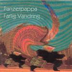

Home Artist links Label link

Panzerpappa - Farlig Vandring
| Artist: | Panzerpappa |
| Title: | Farlig Vandring |
| Label: | Avant Audio Productions aap001 |
| Length(s): | 50 minutes |
| Year(s) of release: | 2004 |
| Month of review: | [05/2004] |
Line up
Steinar Borve - keys, sax
Trond Gjellum - drums, percussion, electronics
Andres K Krabberod - bass, chapman stick
Jarle G Storlokken - guitars
Tracks
| 1) | Farlig Vandring | 8.33
|
| 2) | Ellipsodisk Karusell | 10.41
|
| 3) | Utrygge Trofler | 7.05
|
| 4) | Agraphia | 6.55
|
| 5) | Sykkelgnomflatten | 6.55
|
| 6) | Ompapaomompapa | 9.42
|
Summary
This album is the band's third release.
The music
This album has a lot of brass. The title opener immediately immerses us in sax of the sharp sounding kind, although we find a lot of guitar and bass towards the end, as well as moog. Ellipsoidisk Karusell has a friendlier face with guitar, smooth moogish synths and guitar, but then again the bass remains freaky and the sax sharp. Utrygge Trofler has a lot if vibraphone (or likewise sounding percussion instrument) duetting with the sax, joined as the track progresses by several other instruments, each bringing out the track's central theme. Agraphia is sax led again, with gentle guitar and bass in the back. When the moog synth comes in the sound becomes a lot warmer. Sykkelgnomflatten starts out more jazzy, in the pure sense of the word. Ompapaomompapa is a bit friendlier, with less wining sax (but still) and guitar, thus reflecting its friendly sounding title.
The overall sound of the album is pretty schematic, and a bit sharp and sparse: the melody is most often put forward by the sax, supported by other instruments. Most of the time the music just floats by, at times pleasantly, at times a little too sharp on sax.
Conclusion
There are some tracks with nice sections on the album, the overall sound is too sparse, too normal, too schematic, just not enough to become interesting for those approaching music from a more melodic side. But most of all: the sax really wears one down. Those into experimental jazz might find something in this album, although I fear they might consider there is too little experiment present.
© Roberto Lambooy